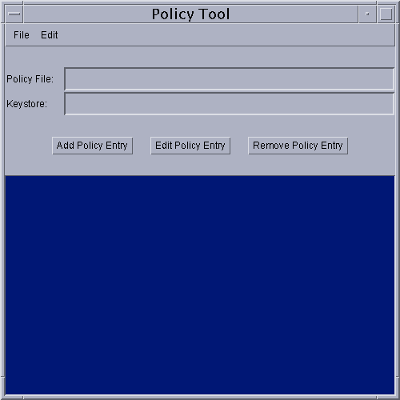
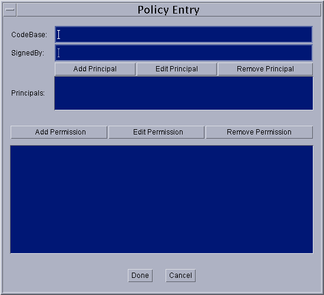
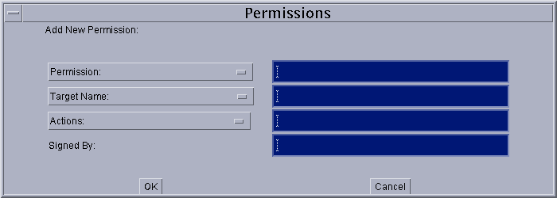

Starting Policy Tool
To start Policy Tool, simply type the following at the command line.policytoolThis brings up the "Policy Tool" window.
Whenever Policy Tool is started, it tries to fill in this window with policy information from what is sometimes referred to as the "user policy file". The user policy file is by default a file named
.java.policyin your home directory. If Policy Tool cannot find the user policy file, it reports the situation and displays a blank "Policy Tool" window (that is, a window with headings and buttons but no data in it):
 You can then proceed to either open whatever policy file you want to work on or create a new policy file, by adding policy entries, optionally specifying a keystore, and saving the file).
The first time you run the Policy Tool, there will not be a user policy file (unless you created one manually).
Creating a new Policy File
To create a new policy file, start by simply selecting the New command from the File menu. This will close the currently open policy file (if any, after first prompting you to save it if needed) and bring up a new policy tool window, that is, a window with headings and buttons but no data in it.Please Note: this is not necessary the first time you run the Policy Tool. Since the tool tries to open the user policy file and one doesn't exist yet (unless it was created manually), the tool will bring up a window without any data in it.
Once you have a new policy tool window, you can then create the policy entries, and specify the keystore (if any of the policy entries specify a keystore alias). At any point, you can save the policy file.
Opening a Different Policy File
To work on a different policy file than the one currently being worked on (if any), use the Open command in the File menu.This will close the currently open policy file (if any, after first prompting you to save it if needed) and will present you with an Open dialog, which you can use to navigate the directory structure until you get to the directory containing the policy file you want to work on. Select that file, then select the OK button.
The "Policy Tool" window will then be filled in with information from the policy file, including the policy file name, the keystore URL (if any), and the CodeBase, SignedBy and Principal parts of each policy entry in the policy file.
Specifying the Keystore
To specify the keystore containing the key information for the aliases specified in the SignedBy parts of policy entries, select the Change Keystore command in the Edit menu.This brings up a dialog box in which you specify the new keystore URL and optionally the keystore type.
As an example, to specify the keystore named "mykeystore" in the
/tests/directory, type the followingfile:URL into the text box labeled "New KeyStore URL".file:/tests/mykeystoreTo also specify that the keystore type is "JKS" (the proprietary keystore type supported by Sun Microsystems), type the following into the text box labeled "New KeyStore Type".JKSWhen you are done specifying the keystore URL and type (if any), select OK (or you can select Cancel to cancel the operation). If you didn't cancel, the text box labeled "Keystore:" is now filled in with the keystore URL and type.
Adding a New Policy Entry
To add a new policy entry, select the Add Policy Entry button in the main "Policy Tool" window.This brings up a "Policy Entry" dialog box:
 Using this dialog box, you specify
- an optional CodeBase entry indicating the URL location where the code originates from. For example, to indicate code from the local
/JavaSoft/TESTS/directory, type the following file URL into the CodeBase text box:file:/JavaSoft/TESTS/
- an optional SignedBy entry indicating the alias name from the keystore used to reference the signer whose private key was used to sign the code. For example, to indicate the alias named "duke", simply type the following into the SignedBy text box:
duke
- an optional Principals entry indicating the list of principals that the code has to be executed as in order for the permission(s) to be granted. See Adding a New Principal.
- one or more permission entries indicating which permissions are granted to the code from the source indicated by the CodeBase and SignedBy values (or to any code if no such values are specified) when running as the specified principals in the Principals list. See Adding a New Permission.
The SignedBy value is a string alias that is mapped (using the keystore) to a set of public keys that are associated with the signers. These keys are used to verify that classes from the specified code source are really signed by these signers.
The SignedBy value can be a comma-separated string containing names of multiple signers, an example of which is "Adam,Eve,Charles", which means "signed by Adam and Eve and Charles" (i.e., the relationship is AND, not OR).
The SignedBy value is optional in that, if it is omitted, it signifies "any signer," or in other words, it doesn't matter whether the code is signed or not. Similarly, if there is no CodeBase entry, then it signifies "any code"; it doesn't matter where the code originates from.
Thus, if there is no CodeBase entry, then all code signed by the specified alias(es) will be granted the specified permissions. If there is no SignedBy entry, then all code from the specified CodeBase will be granted the specified permissions, regardless of whether the code is signed or not, and by whom. If there is no CodeBase entry, and also no SignedBy entry, then all code will be granted the specified permissions.
Note: The exact meaning of a CodeBase value depends on the characters at the end. A CodeBase with a trailing "/" matches all class files (not JAR files) in the specified directory. A CodeBase with a trailing "/*" matches all files (both class and JAR files) contained in that directory. A CodeBase with a trailing "/-" matches all files (both class and JAR files) in the directory and recursively all files in subdirectories contained in that directory.
The Principals entry specifies a list of "principal values". Each principal value specifies a principal_type/principal_name pair which must be present within the executing thread's principal set. The Principals entry is optional in that, if it is omitted, it signifies "any principals".
If there is no principal_type specified and the principal_name is a quoted string, the string is treated as a keystore alias when the policy file is processed at runtime. The keystore is consulted and queried (via the alias) for an X509 Certificate. If one is found, the principal type is automatically assumed to be javax.security.auth.x500.X500Principal, and the actual principal name is assumed to be the subject distinguished name from the certificate. If an X509 Certificate mapping is not found, the entire policy entry granting permissions to the specified principal is ignored.
Adding a New Principal
To add a new principal, select the Add Principal button in the "Policy Entry" dialog box. This brings up the "Principals" dialog box:

To add the principal:
When you are done specifying the principal information, select the OK button (or Cancel to cancel). The new principal appears in a line in the "Principals" entry.
- Type or select a principal type.
The drop-down list labeled "Principal Type:" contains a list of built-in principal types. If you want such a type, select it from the list, and the complete principal type name appears in the text box to the right of the drop-down list.
If you instead want to specify a principal type defined by you or others, type the principal type into the text box.
- Type a principal name.
Type the principal name directly into the text box to the right of the "Principal Name:" text box. For example, to specify the principal named
duke, typeduke
You can then add additional principals by following the same sequence of steps. Or you can edit or remove an existing principal.
Editing a Principal
To edit an existing principal, select the line for that principal in the "Principals:" entry, then select the Edit Principal button. Alternatively, you can simply double-click the line for that principal.This brings up the same type of "Principals" dialog box as appears when you are adding a new principal, except in this case the dialog box is filled in with the existing principal information. To change the information, either make new selections from the drop-down lists or replace the information in the text boxes.
When you are done, select the OK button (or Cancel to cancel changes). The Principals:" entry now shows the principal with your modifications.
Removing a Principal
To remove an existing principal, select the line for that principal in the "Principals:" entry, then select the Remove Principal button.Adding a New Permission
To add a new permission, select the Add Permission button in the "Policy Entry" dialog box. This brings up the "Permissions" dialog box:
 To add the permission:
When you are done specifying the permission information, select the OK button (or Cancel to cancel). The new permission appears in a line in the "Policy Entry" dialog.
- Type or select a permission type.
The drop-down list labeled "Permission:" contains a list of built-in permission types. If you want such a type, select it from the list, and the complete permission type name appears in the text box to the right of the drop-down list.
If you instead want to specify a permission type defined by you or others, type the permission type into the text box.
- Type or select a permission target name.
If you selected a built-in permission from the "Permission:" drop-down list, and permissions of that type have specific target name values, then the drop-down list labeled "Target Name:" contains a list of those values, from which you can choose.
In some cases, where the target name possibilities are infinite but there are some built-in target name specifications that have special meaning, such target names will appear in the drop-down list. For example, the special target name of "<<All Files>>" will appear in the list for File Permissions.
To specify a target name not available in the drop-down list, type the target name directly into the text box to the right of the "Target Name:" drop-down list. For example, to specify the file named
datain the/JavaSoft/ptTest/directory, type/JavaSoft/ptTest/data
- Type or select one or more actions, if actions are relevant.
Some permissions just have a target name, but no actions. For such permissions, leave the text box to the right of the "Actions:" drop-down list blank. (It will automatically be darkened and unavailable for this type of built-in permission.)
For permissions requiring action specifications, type the comma-separated list of actions into the text box, or select them from the drop-down list. For example, to specify both read and write access to a file specified for a File Permission, first select
read(orwrite, order doesn't matter) from the list. The word "read" appears in the text box. Then selectwrite, and the word "write" will be appended, preceded by a comma and a space.
- Type a SignedBy alias into the text box to the right of the "Signed By" label, if required. The SignedBy value for a permission entry is optional. If present, it indicates a signed permission. That is, the permission class itself must be signed by the given alias(es) in order for the permission to be granted.
You can then add additional permissions by following the same sequence of steps. Or you can edit an existing permission or remove a permission.
Editing a Permission
To edit an existing permission, select the line for that permission in the "Policy Entry" dialog box, then select the Edit Permission button. Alternatively, you can simply double-click the line for that permission.This brings up the same type of "Permissions" dialog box as appears when you are adding a new permission, except in this case the dialog box is filled in with the existing permission information. To change the information, either make new selections from the drop-down lists or replace the information in the text boxes.
When you are done, select the OK button (or Cancel to cancel changes). The "Policy Entry" dialog now shows the permission with any modifications you made.
Removing a Permission
To remove an existing permission, select the line for that permission in the "Policy Entry" dialog box, then select the Remove Permission button.Completing the Addition of a Policy Entry
Once you are done adding a policy entry, select the Done button in the "Policy Entry" dialog, or Cancel to cancel.If you selected Done, the "Policy Tool" window now contains a line representing the policy entry. The line contains the CodeBase, SignedBy and Principals information (if any). If none was specified in the "Policy Entry" dialog, just
CodeBase <ALL>appears.Note: a warning is displayed upon closing the policy entry if it contains any SignedBy aliases that don't yet exist in your keystore. Select OK and make a note to create such an alias, or edit the policy entry to fix the alias if was wrong.
Editing a Policy Entry
To edit an existing policy entry, select the line for that entry in the main "Policy Tool" window, then select the Edit Policy Entry button. Alternatively, you can simply double-click the line for that entry.This brings up the same type of "Policy Entry" dialog box as appears when you are adding a new policy entry, except in this case the dialog box is filled in with the existing policy entry information. To change the information, simply retype it (for the CodeBase and SignedBy values) or use the buttons (for the Principals and Permissions values).
When you are done, select the Done button (or Cancel to cancel).
Removing a Policy Entry
To delete a policy entry from the policy file, select the line for that entry in the main "Policy Tool" window, then select the Remove Policy Entry button.The complete policy entry is displayed, and you can then either select OK to remove the entry, or Cancel to keep it.
Saving the Policy File
To save changes to an existing policy file, simply select the Save command in the File menu.
To save a new policy file you've been creating, or to copy an existing policy file to a new policy file with a different name, select the Save As command from the File menu. This brings up the Save As dialog box.
Navigate the directory structure to get to the directory in which you want to save the policy file. Type the desired file name, then select the OK button. The policy file is now saved, and its name and path are shown in the text box labeled "Policy File:"
Exiting the Policy Tool
To exit Policy Tool, select the Exit command from the File menu.
Viewing the Warning Log
If Policy Tool ever reports that warnings have been stored in the Warning Log, you can view the log by selecting the View Warning Log command in the Edit menu.For example, if you have a policy file with a Keystore URL specifying a keystore that doesn't yet exist, you will get such a warning at various times, e.g., when you open the file. You can continue to work on the policy file even if warnings exist.